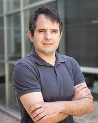
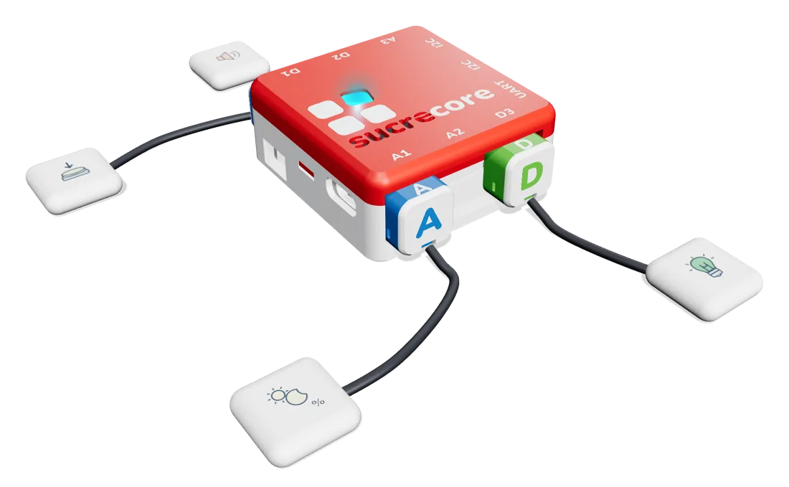

Subdirector del INIT · grupo GEOTEC
Hola, soy
Sergi Trilles
Enseño a los objetos a pensar (AIoT) y a los niños a programar antes de saber leer. Mi investigación acaba en productos que usa gente de verdad: aulas, bodegas y ciudades.
citas · índice h 27 · 62 artículos en revistas
jóvenes han programado con Sucre desde 2016
como investigador principal, de 27 en los que he participado
LIA
Inteligencia local para AIoT. Los dispositivos se agrupan en comunidades y aprenden juntos con aprendizaje federado: cada uno entrena con sus datos y solo envía el modelo a un nodo fog cercano. Lo aplicamos a la calidad del aire y a la salud con wearables.
CoIoTIA
Comunidades de IoT e IA. Sensores parecidos comparten micro-modelos TinyML para decidir en local, con menos latencia, menos consumo y más privacidad. Hay pilotos en calidad del aire, logística de última milla y posicionamiento en interiores.
Sucre

Mueve la luz y mira cómo reacciona el kit. Así aprenden pensamiento computacional desde los 4 años, con tarjetas (Sucre4Kids) o con bloques (Sucre4Stem).
programasucre.com ↗SEnviro
Una estación IoT que vive en el viñedo y avisa al móvil cuando el tiempo favorece el mildiu. Prueba la regla de los tres dieces: 10 °C, 10 mm de lluvia y brotes de 10 cm.
Banco de patentes de la GVA · instalada en 6 bodegas · Premio 5UCV Startup
senviro.uji.es ↗“Uno de mis objetivos es comunicar tanto como sea posible.”
Inteligencia en el borde de la red
IA que corre en sensores diminutos, redes de dispositivos que aprenden juntas sin compartir datos, y datos geoespaciales que ayudan a decidir en ciudades y campos.
Lo último que he publicado
- Sucre4Stem: a K-12 educational tool for integrating computational thinking and programmingIEEE Transactions on Education · 2024
- Transportation analytics using smart card data: a systematic reviewIEEE Trans. Intelligent Transportation Systems · 2025
- Machine learning-based prediction of battery levels in IoT devices using meteorological variablesInternet of Things (Elsevier) · 2024
- Graph neural network for air quality prediction: a case study in MadridIEEE Access · 2023
- A decentralised location-based reputation management system in the IoT using blockchainIEEE Internet of Things Journal · 2022
Dónde me encontrarás
- 2025Premi Joves Investigadors UJI
- 2018Premio Junior 5UCV Startup
- 2018Jóvenes Emprendedores COPE (SEnviro)
- IPCoAIoT: plataforma de IA para el Internet de las Cosas (Becas Leonardo, Fundación BBVA)
- IPNexTCity: gemelos digitales para ciudades sostenibles (Horizon Europe)
- Estudiantes: TFG, TFM o doctorado en AIoT, TinyML o datos geoespaciales.
- Centros educativos: talleres y formación docente con Sucre.
- Empresas y ayuntamientos: transferencia, contratos de I+D y despliegues IoT.
TFM dirigidos · 8 tesis doctorales (2 defendidas)
comunicaciones en congresos nacionales e internacionales